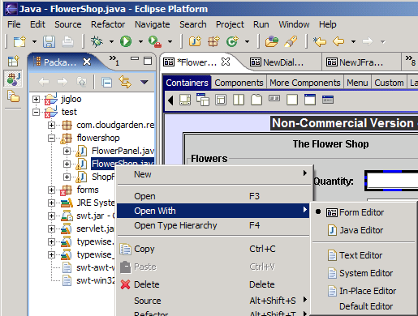
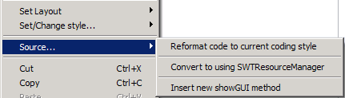
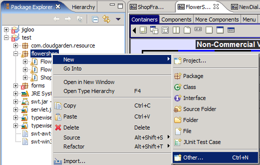
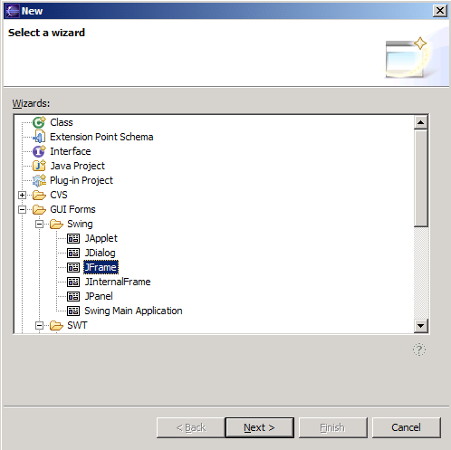
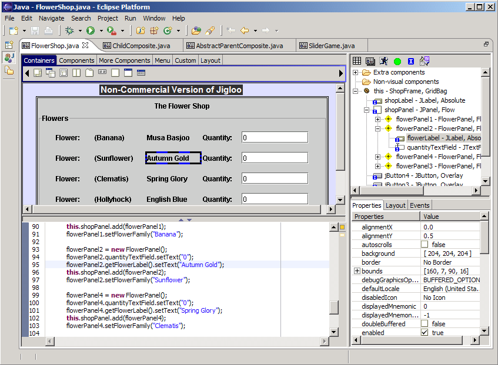
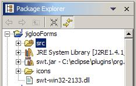
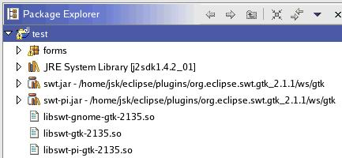

Here is a
suggested plan to help you get started quickly with using Jigloo:
Read the “What's new” pages for versions 3.9.0, 3.8.2, 3.8.1, 3.8 and 3.5.
Create one (or all) of the examples that are part of the Jigloo distribution - they demonstrate SWT and Swing applications, visual inheritance, use of custom classes, use of JavaBeans, etc.
If you are planning to modify existing GUI classes (created either by hand or by a different GUI builder, eg JBuilder, Netbeans, etc) then read "Opening an existing GUI class".
If you are working on SWT classes created using Jigloo 2.7.2, or created without Jigloo, read this section.
If you are working on classes which have had Strings externalized using Jigloo 2.7.2, read this section.
Otherwise, read "Creating a new GUI class".
Take a quick look at how Jigloo parses your code - you don't need to understand it all right now, but you may need to come back to it later if you have code which does not seem to be being recognized by Jigloo, since understanding how Jigloo parses your code (and how you can control which code is parsed, and which classes are instantiated) will enable you to get the most out of Jigloo.
If you are making an SWT class, read this section on including the SWT libraries.
Familiarise yourself with the basic components of Jigloo and how to use them
the Outline View
the Preferences Page
Look at the Useful Tips page.
To open an existing Java GUI class, simply
right-click on it in the Package Explorer and choose the "Open
with->Form Editor" option. If you subsequently close the
editor and double-click on the class in the Package Explorer it will
automatically be opened with the Jigloo Form Editor.

You will be able to open and modify SWT classes created with versions of Jigloo earlier than 3.0, and also with other GUI builders or by hand, but here are a few notes on code differences between the versions:
SWT images/fonts/colors - in earlier versions of Jigloo, images, fonts and colors were created as fields and disposed in the DisposeListener handler which was added to the main class. In Jigloo 3.0, images, fonts and colors are handled by the SWTResourceManager. Jigloo 3.0 offers a way to convert from using these image/font/color fields to using the SWTResourceManager, and in the process removing the fields. Simply right-click on the Form Editor, and choose the "Source->Convert to using SWTResourceManager" option.
The showGUI method for SWT Composites in older versions of Jigloo contains a setSize method call to set the size of the parent Shell. This showGUI method is incompatible with Jigloo 3.0, and the setSize method will not be modified by Jigloo 3.0 when the size of the main Composite is changed in the form editor. Jigloo 3.0 offers a way to quickly insert a new showGUI method. To insert the new showGUI method, right-click on the Form Editor, and choose the "Source->Insert new showGUI method". This new showGUI will set the size of the shell automatically from the size of the Composite. You will need to manually remove the old showGUI method.
To start building a GUI you can either
start with a new one, or start editing an existing GUI class made by
a different GUI builder (eg, JBuilder or Netbeans) or by hand.
To
create a new GUI class inside a Java package, right-click on the
package and choose "New->Other"...

...then
select "GUI Forms" in the dialog which will pop up, and
choose the kind of class you want to make (eg, SWT Composite,
JFrame, etc).

This
will create a new Java class file in your package, which will be
opened automatically in the Jigloo GUI editor.
A screenshot of Jigloo (with one of many
possible layout setups) editing the "FlowerShop" example is
shown below. The editor has been maximized
by double-clicking on the editor's tab. This is the recommended
layout for GUI editing since there is no wasted space.

The
screenshot shows three of the four main components of Jigloo, which
are described in their own sections:
The Form/Source editor (left half of the screenshot)
The GUI Properties editor (bottom right of the screenshot)
The Outline View (top right of the screenshot)
The Preferences page, which is not in the screenshot.
If you are going to run SWT GUIs inside
Eclipse then you need to make sure eclipse can find the required
libraries. One way to do this is to add the required jar file(s) to
your project's build path and to copy the native SWT library (or
libraries) into your project.
|
On the Windows platform, do this: |
|
|
|
|
Your project should now look something like the image to the right: |
 |
|
For Linux (and for other platforms it should be similar), do this: |
|
|
|
|
Your project should now look something like the image to the right: |
 |
When you run a class you might also need to
set the java.library.path variable to point to the working
directory for your project. ie, when you create a run configuration
for your java class, choose the "(x)=Arguments" tab, and
enter in the "VM arguments" panel a line like
"-Djava.library.path=/home/jsk/eclipse/workspace/myProject".
If you use the
"Run" right-click option in the Form Editor, a run
configuration is created for you, and the java.library.path variable
is set for you - you just need to ensure that the native libraries
are in your project's working directory, and that the required jar
file(s) are on your build path.